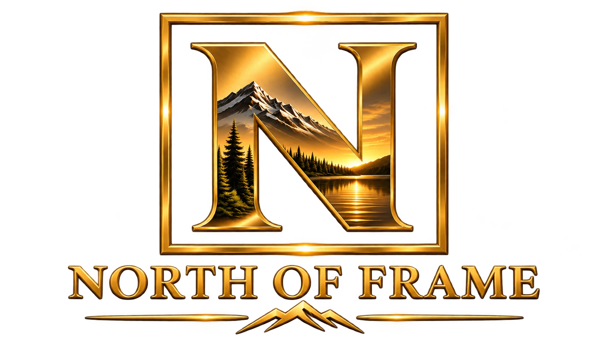

Independent spirit. Lasting stories.
Stories worth
leaving behind.
Film with purpose. A lighter footprint.
We are North of Frame.

Carbon-neutral film productionDiscover our story ↓
01 / Our storyA different perspective
Great stories.
Greater responsibility.
North of Frame is a carbon-neutral film production company with a simple belief: the stories we tell should care for the world we share. We bring a thoughtful, environmentally conscious approach to filmmaking, continually striving to reduce our impact and do better for the planet. For us, creating meaningful cinema and caring for the environment belong in the same frame.
Driven by stories. Mindful of our planet.